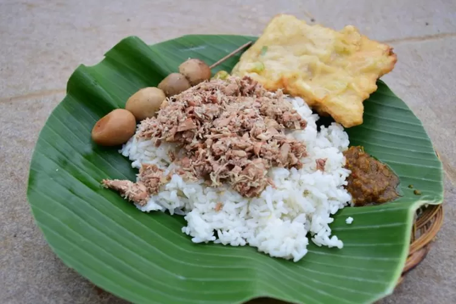
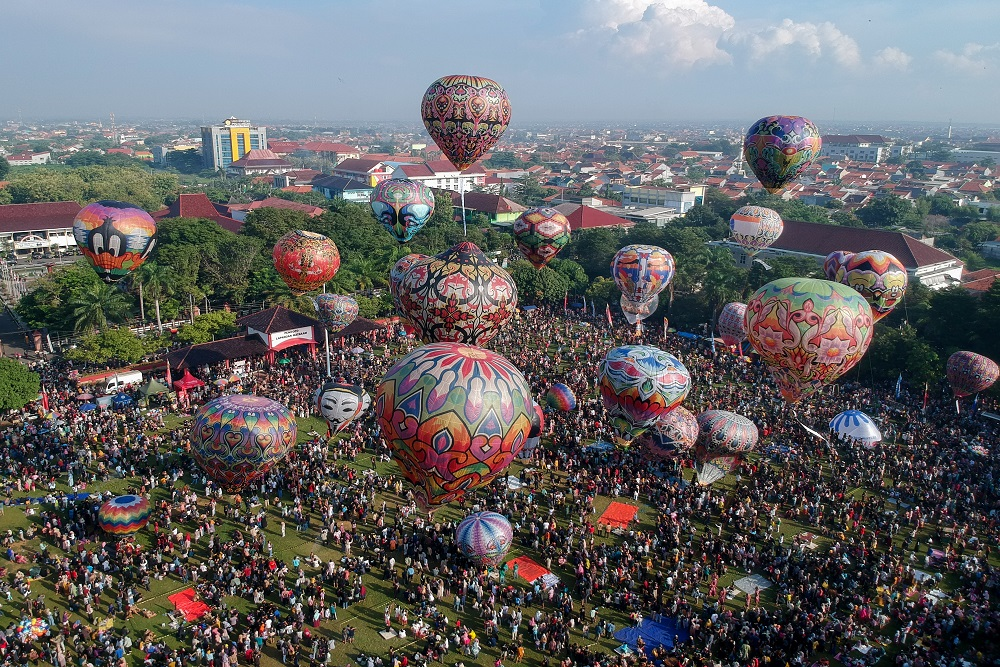

Seni Tradisional
Seni pertunjukan seperti Ludruk dan wayang kulit adalah bagian penting dari budaya Pekalongan.

Pekalongan terkenal dengan makanan khas seperti Nasi Megono dan Soto Pekalongan yang kaya rasa.
Seni pertunjukan seperti Ludruk dan wayang kulit adalah bagian penting dari budaya Pekalongan.
Berbagai festival dan upacara adat seperti Grebeg Syawal menunjukkan kekayaan budaya masyarakat Pekalongan.
